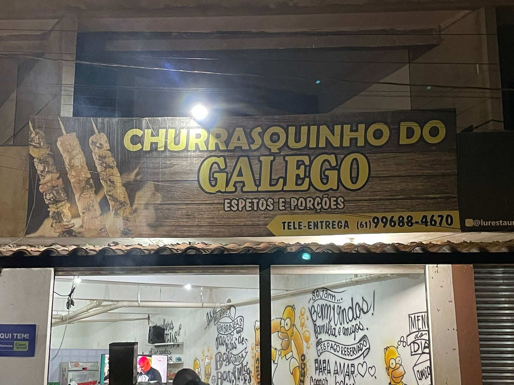
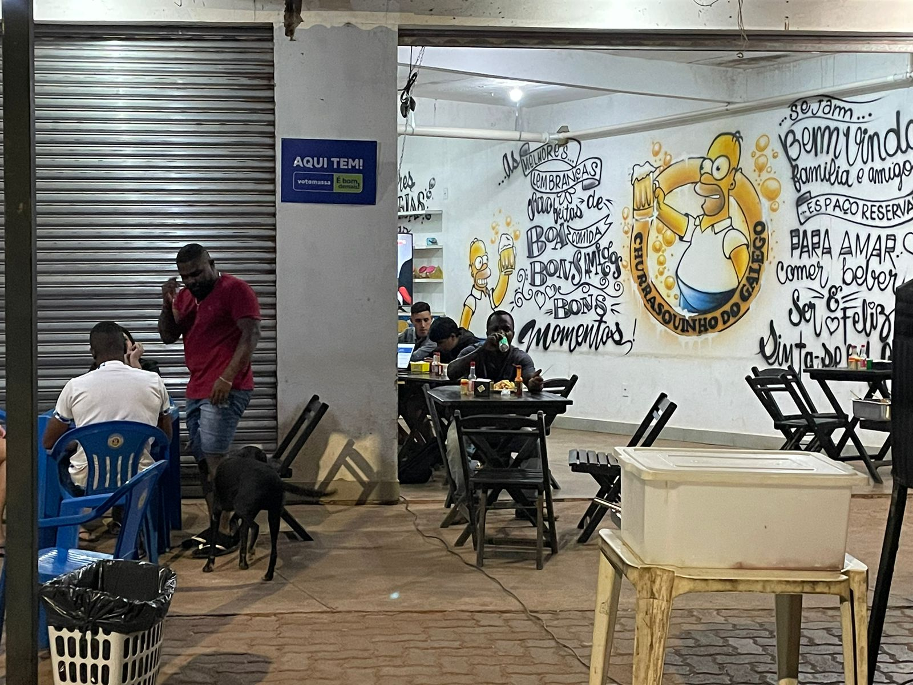
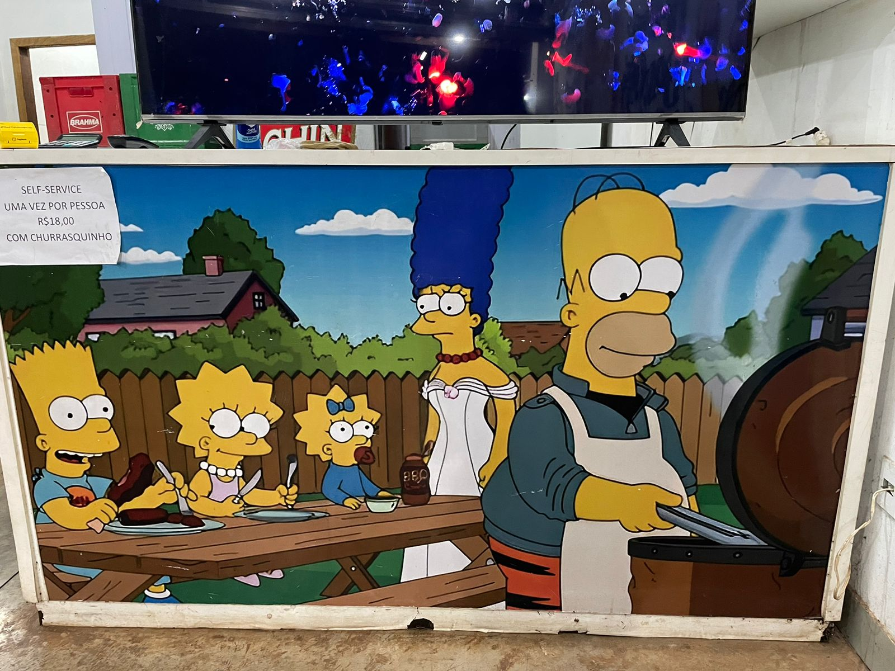

Churrasquinho do Galego
O melhor da jantinha com sabor e tradição desde 2005.
Sobre a nossa loja
O churrasquinho do Galego tem variedades na questão de churrascos bebidas e jantinhas.
História da crição da loja, contada pelo Darciel Camelo Dantas, fundador da loja:
O Churrasquinho teve início em 2005, no Recanto das Emas, onde estive por nove anos, inicialmente em frente a uma distribuidora de bebidas, dedicando-me à preparação de churrascos e refeições. Com o tempo, abri meu próprio quiosque na mesma região, consolidando meu negócio. Posteriormente, adquiri um terreno na Ponte Alta, no Gama, o que me levou a encerrar as atividades no Recanto das Emas e a atuar por quatro anos com entregas de comida. Em seguida, realizei o sonho de reabrir um quiosque na Ponte Alta, onde o Churrasquinho do Galego se apresenta hoje, renovado e preparado para continuar servindo com qualidade e dedicação.



Contato, endereço e horário de funcionamento
WhatsApp: (61) 99688-4670
Endereço: Núcleo Rural Casa Grande - Ponte Alta Norte CHÁCARA 16 - Pte. Alta Norte (Gama), Brasília - DF, 72427-010
Horário: Terça a sábado, das 18h às 23h